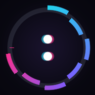
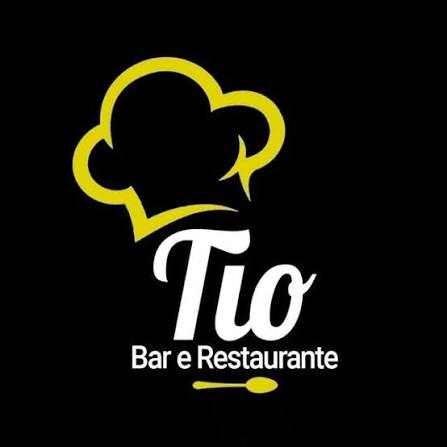
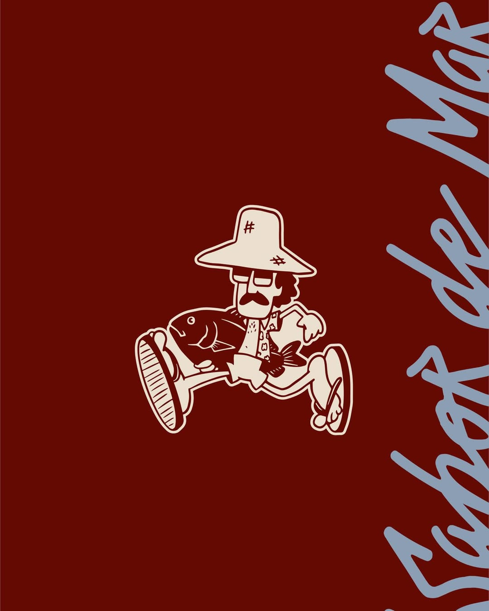

Sobre
Substitua este texto por uma breve apresentação sua — quem você é, o que faz e o que curte construir.
Um segundo parágrafo opcional para contexto: como você trabalha, com o que já mexeu, o que está buscando agora.
Do lado de cá, alguns destaques rápidos: principais tecnologias, áreas de interesse, ou um resumo em uma frase.
Um segundo parágrafo para o que você quiser destacar — projetos recentes, o que está estudando, no que quer trabalhar a seguir.
Projetos
-

Cronômetro
Cronômetro e timer regressivo em PWA: mostrador circular com waveform, efeito glitch que intensifica nos últimos segundos, seletor de alarme, Wake Lock pra manter a tela ligada e fundos animados selecionáveis. Estático, sem build.
Abrir app -

Tio Bar e Restaurante
Site institucional em Next.js 15 (App Router), sem backend próprio: cardápio, avaliações do Google, Instagram e mapa vêm de serviços externos gratuitos, com o site estático e revalidação a cada hora.
Ver no GitHub -

Pargo Fish Bar
Bar de drinks autorais e cozinha marítima, de frente pro mar. Página única: hero em vídeo, menu em abas por categoria, galeria com lightbox de fotos e vídeos e reserva pelo WhatsApp.
Ver no GitHub